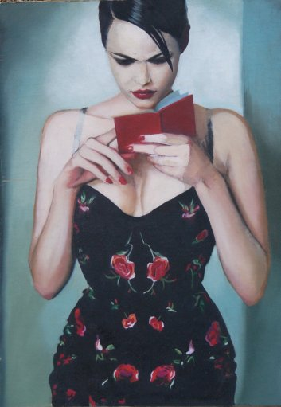
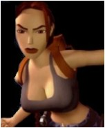

 |
 |
[TOP] Jose Quesada, Model with Red book (in progress), 30 x 42 cm, 16 x 11 inch, Oil on canvas
This is a picture taken from the ads of some famous boutique in London about 7 years ago.The painting is unfinished. It will be hung together with a painting of Lara Croft (an example, not the final picture, is shown right). Lara is a sociological phenomenon, with plenty of fan sites where designers around the world recreate her vectorized curves in millions of different poses and situations. Lara was designed to be sexy, appealing. She is virtual. She is the maximum exponent of what a woman means for a certain sector of the population. She is, of course, unreachable, just an idea (Note again how romantic ideas are still disguised in our cyber-world). It can be represented as a few equations that describe her volume, and by a matrix of colors that describe her skin. Sometimes, her rendering is not even very realistic. But she is sexy.
Next to her, our human model (probably selected from a pool of millions) looks shy, self-centered, ... insignificant.